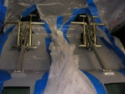
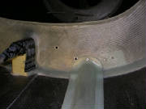
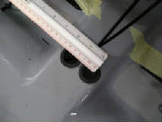
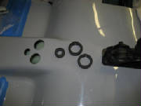
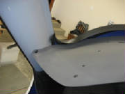
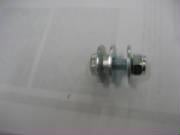
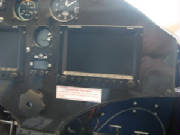

|
I'll try to be fairly prompt in reporting my build progress.
I plan to follow the sequence in the kit build manual, expanding here with additional information that may be useful to other
builders.
The factory support has been excellent. An e-mail to the support staff is always answered
by the next day with detailed explanations, accompanied by additional drawings and photos where they are needed to help explain
something.
Dec 10, 2006 3.5 hours
I cleaned
up the edges of the windscreen lip using a sanding block and 40-grit sandpaper. I then painted the recess with black
Nitro paint that was supplied with the kit. This paint appears to be a generic lacquer. I also sanded edges and
painted the recess where the sky light will be mounted.
The first thing I ran into is that the location of various holes and openings where components are to be installed
were not marked on my fuselage as indicated in the kit manual. In retrospect, I'm not sure how helpful those markings
would be, since they are relatively easy to wipe off the slick gel coated interior surfaces, and because I always think mounting
holes should be match-drilled to the component to be mounted.
The real problem is that the manual is not specific
about the locations and sizes of the various holes and openings. I sent an e-mail to the factory and got what I needed
on the following day, in the form of drawings with the necessary dimensions.
One point of confusion was the opening in the rear cockpit bulkhead through which the flap handle linkage
extends. When I placed the flap handle in position as indicated by the drawing in the manual, the shape of the bulkhead
opening in the supplied sketch didn't make sense. The hole shown above seemed complete adequate. I asked the
factory about this, and they replied with some photos that clarified things and revealed an error in the flap handle drawing in the kit manual.
|
| The photo from Tomaz, showing the flap handle in the jig they use to mark the bulkhead opening |
The problem was that the mounting angles at the aft end of the flap
handle assembly needed to be rotated 180 degrees, such that the assembly itself protrudes through the bulkhead, not just the
linkage. With that clarification, the shape of the opening made complete sense, so I corrected it as shown here.
Dec 24, 2006 3.5 hours
We lost power at our house for ten days in the recent winter
wind storm, so work was interrupted for awhile.
Using the factory-provided mounting reference relative to the
front edge of the control stick openings, I was able to drill the mounting holes for the throttle assembly, install the nutserts
and cut the slot for the elevator trim assembly.
Here's the throttle assembly mounted temporarily to check
the match between the mounting holes and the nutserts.
I masked off the front part of the fuselage, as indicated in the kit manual, and painted the interior lip of
the windscreen opening with spray "bumper paint", supplied with the kit. This is a very nice, flat black paint
that goes on very smoothly without forming runs, and seems very durable. I also painted the bare composite interior
surfaces below the windscreen with black Nitro paint.
At first I was not clear on what the kit manual wanted me to paint, but after examining the cockpit and looking
at the manual photos for awhile, I decided that the idea was to paint all of the interior surfaces that are not the slick
gray gel coat. I'm trying to follow the manual sequence, so some of the sufaces will get painted later.
I masked off and painted both sides of the cockpit.
The area that needs to be painted black is the section that is not gel coated surrounding the door opening. This includes
a narrow strip running up the edge of the forward door post. I sprayed sections below the top of the door opening with
bumper paint, and used black nitro to paint a few inches above each door opening. The rest of the upper section and
the top of the cockpit will be painted after I invert the fuselage.
Here is the right side of the cockpit unpainted. You
can see the areas around the door opening that are bare fiberglass and carbon fiber surfaces.
Here is the left side of the cockpit after masking and painting with
bumper paint. After this picture was taken, I painted the section above the door opening with black nitro paint.
Here's what it looked like after painting part of the section
over the door opening.
Next, I mounted the rudder pedal assemblies. Here is the
sequence that I favor in order to get components match-drilled reliably:
Hold the assembly in the desired position
(this is pretty easy for nearly all of the kit assemblies, because everything fits very well). Mark one mounting hole
of the four holes in the aft end of the rudder assembly. Drill that hole to the size of the bolt (6 mm), insert a bolt
through the assembly into that hole and secure the assembly temporarily with a washer and nut on the bottom side of the cockpit
floor.
Ensuring that the rudder pedal assembly is level side-to-side, drill a second 6 mm hole in the diagonally
opposite hole in the aft end of the assembly. Put a bolt through that hole to keep things lined up.
Disconnect
the rudder pedal return springs so that you can lay them back out of the way. Center the forward mounting flange of
the assembly on the mounting pad at the forward bulkhead, and mark the lower mounting hole with a fine Sharpie pen.
Remove the assembly and as carefully as you can, drill a 6mm hole where you marked the mounting pad. Put the assembly
back in place and ensure that you can easily slip mounting bolts into the three holes that you have drilled so far.
Having confirmed the proper position for these three bolts, remove the assembly again and enlarge the forward mounting hole
to 8mm using a metric step drill. Then, using your nutsert installation tool (see the page on tools), install a 6mm nutsert in the forward hole.
Mount the pedal assembly again using bolts, nuts and washers in the
two rear holes, and a 6mm bolt screwed into the forward nutsert.
Now drill the two remaining holes for the
rear flange. Put bolts through these just to help ensure that things are aligned and stay that way while you finish
the holes for the front flange.
To drill the two remaining holes for the front mounting flange, I used an angle
drill attachment, because it has a small chuck and avoids interference with the assembly structure.
Here is how I used my angle drill attachment to drill the forward
mounting holes while avoiding interference with the rudder pedal assembly. Disconnecting the rudder pedal return springs
allows you to lay the pedals down flat and get them out of the way.

Here are the rudder pedals mounted temporarily. They will
be removed to finish drilling holes for the rudder cables and continue with the other work in the cockpit area.
Jan 13, 2007 1.2 hours
A careful
scan of the kit manual and the separate file of photo details allowed me to determine where the rudder cables penetrate the
firewall, fuselage floor and the bulkheads on their route to the tail section. I also confirmed that all the penetration
holes are 6 mm diameter. The forward ends of the rudder cables are swaged to 6 mm diameter threaded rods, and the tubing
that is used for routing the cables is also 6 mm diameter. I also measured the left-to-right distance between the rudder
cable S-tubes on the rudder pedal assembly. That measurement is 5 cm, which establishes the lateral distance between
the rudder cable penetration pairs at the firewall and under the front seats.
Here are the penetrations beneath the forward end of the rudder
pedal assembly.
This shows the penetrations on the front side of the firewall.
This shows the penetrations under the pilot and passenger seats.
|
| Looking forward, showing the bottom of the aft cockpit bulkhead |
|
| Penetrations on the rear side of the aft cockpit bulkhead. |

|
| L:ooking aft, showing the forward face of the center fuselage bulkhead |
|
| Penetrations on the rear side of the aft cockpit bulkhead. |
Jan 20-21, 2007 4.0 hours
With help
from some mebers of local EAA Chapter 1440, inverted the fuselage as instructed in the kit manual.
|
| Looking down at the top of the inverted cockpit. |
I sanded some rough fiberglass edges around the roof of the cockpit,
then painted all the bare glass surfaces with black Nitro paint.
The triangular
stuctures bolt together through the overlapped spars to increase the rigidity of the spar-fuselage joint, and to help transfer
the loads through the structure.
After the black Nitro paint dried, I did a trial fit of the cockpit lining material in the cabin roof.
I then brushed contact cement onto the roof (using a disposable brush and wearing my organic vapor face mask) and sprayed
contact cement on back side the lining material. Both types of contact cement are included in the kit. The cement
is left to dry until it is no longer tacky to touch.
With Mary's help, I positioned the lining material on
the roof of the cockpit and pressed it into place, working from center out and back to front. The contact cement was
easy to use. It didn't grab until the cloth was pressed into place, so it was straightforward to position the cloth
first, then carefully press it down for a good bond and a smooth cloth surface. The lining material supplied with the
kit fit perfectly.
I then repeated this process for the sections of lining material that cover the sides of the
cockpit above the doors at the wing root. These pieces of lining had to be slit where they fit over the brackets that
mounts the fuel valves. I cut these slits while trial-positioning the lining pieces before applying the contact cement.
Again, everything fit nicely.

I had a small Radio Shack butane soldering iron, which I
used to cut around the edges of the openings through the cabin wall above the doors at the wing root, as instructed in the
kit manual. It melts cleanly through the material, leaving a fused edge that won't fray.
One of the next steps is to mount the fuel valves on the brackets
above the door openings. I discovered that the fiberglass layup over the brackets was built up high enough to interfere
with the mounting of the valves. Even removing the cockpit lining material under the valves will not create sufficient
clearance. It would be easy enough to grind down the material with my rotary tool, but I've asked the factory for
their suggestion on how to address this.
Also, I could not identify the two washers that are used in mounting
the valves to the brackets, so I've asked the factory to clarify which part to use.
Jan 24, 2007
Tomaz of Pipistrel answered my e-mail and sent this picture
for clarification of the fuel valve installation. He agrees that it is permissible to remove a small amount of fiberglass
over the valve bracket, and also suggested enlarging the hole slightly.
I also noted that the fuel hose
attached to the bracket appears different from that shown in the manual, but matches what was delivered with the kit.
I'm still waiting for my order of Loctite to arrive, so it will be a couple of days before I complete the valve installation.
Jan 25, 2007 0.5 hours
I couldn't locate a source for long (30 cm or so) metric
drill bits at a reasonable price, which I needed to drill the holes for mounting the airbrake center bracket. So I found
a workaround in the form of a flexible angle drill from Aircraft Spruce that would accept my small angle drill chuck and allow
me to get underneath the mount to drill the holes.
I measured carefully to get the bracket located 1 mm right of
the fuselage center line, per the kit manual, drilled the holes (one at a time, inserting a bolt temporarily in each hole
before drilling the next), and left the bolts in place temporarily until my order of Loctite arrives.
Note that
positioning the bracket as called for in the manual places it well to the right of the space between the two openings cut
in the bulkhead. Referring to the pictures in the kit manual, this appears to be correct.
Jan 29, 2007 1.5 hours
My Loctite 542 (for threaded fluid fittings) and Loctite 262
(for permanent nut-bolt assembly) arrived. I used my soldering iron to cut away some of the cockpit liner under the
valve and opened up the mounting hole in the bracket slightly using a chain saw file. This technique provided sufficient
clearance to mount the fuel valves.
I assembled the fuel valve components using Loctite 542, capturing
the bracket between the valve body and one fuel nipple. After tightening the fittings, there was still some play between
the valve and the bracket, but after the Loctite hardened, the valve was securely held in place and felt pretty solid.
I also permanently installed the nuts onto the mounting bolts for the airbrake lever center bracket, using Loctite
262.
Feb 4, 2007 0.7 hours

This is a picture from Tomaz at Pipistrel, showing the fuel valve
and fuel line installation on the completed aircraft. The fuel line material is different from that in the photos in
the kit manual, but matches the material in the kit. Similarly, the photo shows the use of zip ties to secure the
fuel line to the valve stem, rather than the metal hose clamps shown in the kit manual. The kit comes with the zip ties
as shown in the photo from Tomaz.
I installed the fuel lines with the quick disconnect fittings.
The fuel line is very difficult to push over the stem on the fuel valve, so I boiled some water, poured that into a cup and
held the end of the fuel line in the hot water for a minute or so. That softened it enough to get it onto the stem with
some coaxing. I then used two zip ties on each connection, cinched up as tight as I could, using pliers to apply the
tension.
The manual next mentions an aluminum fitting for the fuel return line that penetrates the bulkhead above
the pilot. I don't have that piece in the kit, and it's not in the inventory, so there is a change to investigate
here.
Feb 5, 2007
Tomaz confirmed that the fuel return line no longer penetrates
the bulkhead via a separate fitting. The return line is simply routed through a rubber grommet in the large hole already
provided in the bulkhead as shown here. These are the pictures that Tomaz provided, showing the installation in
a completed aircraft at the factory.
Here are the
fuel lines emerging on the back side of the bulkhead.
That completes the work to be done while the fuselage in inverted.
Now it's time to turn it upright again.
Feb 9, 2007
With the help of three people interested in the Pipistrel, arranged
by Scobie Puchtler, a local pilot and RC model designer (see www.liftworx.com), we carried the fuselage out of the garage, turned in upright again and repositioned it for the next steps in construction.
We also spent an hour or so looking through the kit contents and talking airplanes. Thanks, guys!
Scobie
had already been watching Pipistrel on the web, and all were impressed with the kit and the utility of this airplane.
Chalk up some more enthusiasts for the Sinus.
Feb 10, 2007
I started covering rudder cable and elevator trim installation
here, but have since moved it to a new page -- Flight Controls.
Feb 17, 2007 1.5 hours - velcro for seats and carpet
I located the velcro strips in the kit -- nicely packaged and
already cut to the proper size and shape. I also unpacked the seats, headrests and the cockpit floor carpet so that
I could place the velcro in the proper position to match the velcro already sewn into these components.

Here is the velcro on the rear cockpit bulkhead for attaching
the headrests.
To install the velcro, I first cleaned the surface with acetone,
then marked where the velcro is to be mounted. Then I painted the special primer on the marked location. The kit
manual says this is a 3M primer. I found a .5 litre plastic bottle labeled Primer, but saying nothing to indicate it
is a 3M product. I couldn't find any other reference to primer in the manual, and the placement of this item in
the kit inventory eventually convinced me that this is the correct material. So, as instructed, I painted it onto the
surface for one strip to see how it works. After letting it dry for 5 or 10 minutes, I applied the adhesive-backed velcro
strip. I must say that the resultant bond is very strong. I am sure that the velcro strip would have to be destroyed
to remove it. I also noted that you had best be careful when placing the velcro strip, because once it comes in contact
with the primed surface, it's there to stay.
Being thus satisfied with the materials and the process, I proceeded
with the remainder of the velcro installation.
First, I put the seats and carpet in place and marked the
location of the ends of the sewn-in velcro strips where they contacted the fuselage floor. I then positioned the loose
matching velcro strips at appropriate spots on the floor, guided by the kit manual photos, and marked around them with a thin
felt marker. I painted the primer inside these marked locations, let it dry and applied the velcro strips.
|
| Here is the carpet installed temporarily just to make sure the velcro matches and holds it securely. |
|
| Here is the carpet installed temporarily just to make sure the velcro matches and holds it securely. |
|
| The velcro that holds the seat in place |
Here are the seat and headrest installed temporarily.
The headrest is sewn into the black panel that surrounds it. The headrest is held in place by velcro strips on the back
of that panel. The seat and seatback upholstery and paddding is all sewn in one piece, with velcro strips under the
seat padding. The back is later supported by nylon webbing across the opening in the bulkhead behind the seat.
At this point, being satisfied with the velcro installation, I covered all the velcro strips in the fuselage with blue painter's
tape to protect it during the remainder of the construction.
Mar 24, 2007 2.4 hours - Install fuel delivery and
return lines
Using dimensions provided by Tomaz at Pipistrel, I cut the prescribed
hole in the firewall, using a 7/8" hole saw two cut two adjacent holes as described in the kit manual. I then positioned
the 3-piece fuel line assembly with the T-connector behind the aft fuselage bulknead and ran the center line forward under
the cockpit floor through the hole in the firewall. After that, I ran the fuel return line forward under the floor and
through the same hole.
This is the hole in the lower firewall with the fuel delivery and
return lines emerging from under the cockpit floor. The large openings will later be filled by fire sleeve material
that will protect the fuel lines inside the engine compartment.
I then riveted plastic straps to the back of the aft fuselage
bulkead and routed the fuel delivery lines form the T connector through the straps to the left and right fuel valves.
I routed the fuel line with its quick-connect fitting to the left side. Under the floor, I tied the delivery and return
lines together with plastic zip ties and taped them to the fuselage floor as instructed in the kit manual. Tomaz said
to use fabric-backed tape for this, which sounds like what we call duct tape. I used a product called Gorilla Tape,
manufactured by the same company that makes Gorilla Glue. I have found Gorilla Tape superior to duct tape
for adhesion and longevity.
The picture on the left shows the front side of the aft cockpit
bulkhead, with the rivets holding the plastic straps to the back of the bulkhead for the fuel and return lines.

|
| Bottom center - connections |
Jan 5, 2008 1.5 hours - Cockpit side
carpeting
I installed the carpet on the sides of the cockpit. I painted liquid contact cement on the fuselage and
sprayed aerosol cement on the back side of the carpet. After both surfaces were dry to the touch, I pressed the carpet
in place. Because the carpet did not adhere consistently, I brushed some liquid cement on the backside of the carpet
at the edges, which then secured it well.
Jan 6, 2008 1.6 hours - Door frames
I unpacked the door frames, lexan windows and door parts.
The door assembly and mounting is not covered in the kit manual, but it appears very straightforward. After familiarizing myself with the parts and determining how they will
be assembled, I checked the fit of the lexan windows in the frames to confirm that they match. I also confirmed that
the frames match the door openings in the fuselage, and that the hinge recesses in the doors match the hinge recesses in the
fuselage. Then I painted the recessed mounting surface of the door frames with the same black Nitro paint that I used
for the windshield and top window mounting surfaces. The
next step is to prepare the lexan windows for mounting in the door frames. For that step I will follow the directions
provided in the kit manual for the windshield and top window.
January 6, 2008 3.3 hours - Throttle and choke cables
I received the photos below from Dave Clark showing reference dimensions for the positions of the holes in
the cockpit floor through which the throttle cable, choke cable and various electrical cables are routed.

After marking the hole positions, I measured the rubber grommets and determined that the two larger holes are
3 cm diameter and the smaller hole is 2 cm diameter. I cut the holes slightly undersize using hole saws, then opened
them to the final dimension with my rotary grinding tool. Then I installed the rubber grommets in the holes.

I drilled a 10 mm hole for the brake line near the center of the cockpit floor forward of the rudder cables
at the position specified in the kit manual. Then I inserted a rubber bushing in the hole.
After studying photos and comparing notes with Dave Adams, I decided how I would install the throttle
and choke cables at the throttle quadrant.
The cable ends have to be soldered to keep them from unraveling
while sliding through the cable housings and end fittings. Once a strand comes free, there really is no alternative
but to cut off the cable end until you get to a clean section. A solder pot comes in handy to solder cable ends. I found one on eBay. To use it, I first coat the cable
end with past flux, then dip the cable end in the molten solder. Sometimes it helps to add more flux and dip it again
until the cable is saturated. The result is a nicely coated cable end that won't unravel and will slide through
the cable housing easily.
|
| Cable end after dipping in solder -- clean and neat |
First, I had to drill two new holes in the firewall
for the cables, aligned with the opening in the electrical panel. The holes that I drilled at the positions indicated
by the measurements from Pipistrel were about 1 cm too high. Then I routed the throttle cable housing through the firewall,
through the electrical panel, through the smaller of the three grommeted holes in the cockpit center tunnel, and up through
the fuselage floor at the lower end of the throttle lever.
The shorter of the two cables in the kit is the throttle cable. This cable comes with a hex-shaped
stop at one end and bare cable at the other. I decided to take advantage of the cable end already
installed on the throttle cable and use it to anchor the cable at the throttle lever. This freed up the 6.5 mm steel
barrel to use for the choke cable. The 6.5 mm barrel fits the choke lever anchor point better than the 5.5 mm brass
barrel supplied in the kit.
I soldered the end of the throttle cable to keep the strands
from unraveling. Then I removed the throttle cable from the housing, and lubricated the cable and housing with spray
lithium grease. I removed the threaded cable bushing from the bottom of the throttle lever to make it easier to thread
the cable back through the throttle handle and into the cable housing.
I threaded the cable through the top of the throttle lever, from
front to back, then around the groove in the handle and out the bottom of the lever assembly. Then I slid the threaded
bushing over the cable and screwed it back into the throttle assembly, using Loctite 243 on the threads.
I threaded the cable into the end of the cable housing and
pushed it through until the cable end fitting was seated in the top of the throttle arm. Then I pushed the cable housing
back until it was seated in the bushing at the bottom of the throttle lever.
|
| Note the steel barrel that is used to anchor the end of the cable in the choke lever |
The choke cable is the longer of the two cables, with the cable bare on both ends. It goes through
the left hole in the firewall, through the electrical panel, through the grommeted hole in the cockpit center tunnel, then
loops under the floor behind the throttle quadrant and comes up through the left side of the quadrant from the rear, ending
at the choke lever.
Having decided to use the larger steel barrel on the end of the choke cable, I first drilled the 6.5 mm
hole for the barrel all the way through the choke lever. As delivered, this hole is only on the right side of the lever,
but it needs to be extended through to permit the cable to line up with the hole through the barrel. I
slid the barrel into the choke lever, then lubricated the choke cable and housing, threaded the cable through the hole in
the barrel and tightened the hex bolt in the barrel to secure the end of the cable. Then I pulled the slack out of the
cable until it was seated in the groove around the choke lever and pushed the cable housing into the opening at the bottom
of the choke lever assembly.
That completes the throttle and choke cable installation
until the engine is mounted on the firewall.
July 17th, 2010 10.0 hours - Install center console, instrument panel and dashboard
I checked the console for general fit and positioning in the cockpit and found that it fit nicely. I then removed the
console from the fuselage and assembled the console, main switch panel and instrument panel.
I found that
the switch panel mounting nuts were covered with carbon fiber cloth and epoxy on the back sides, which would not permit the
mounting screws to be fully screwed into the nuts in the console. So I used my dremel tool to grind the cloth and epoxy
off the back side of the nuts. I also had to remove some material from the edges of the console opening to permit the
switch panel to be inserted into the opening.
|
| Console opening relieved to accept switch panel |
|
| Carbon fiber and epoxy removed from back side of mounting nuts |
I also found that some excess cloth and epoxy on the center console prevented the instrument panel from fitting into the console
opening when the switch panel was mounted. So I ground off the excess glass and epoxy, which allowed the console, switch
panel and instrument panel to fit together.
I then installed the instrument panel in the console frame and mounted the entire assembly in the fuselage and screwed it
in place, first with four screws at the bottom of the center pedestal, then two screws in the bottom flange at each side post,
then five screws at the firewall. All of the places where the mounting screws go are visible as small marks molded into
the console.
Then I fit the dashboard on top of the console assembly and checked the fit of the pre-drilled mounting holes. Most
of the holes matched the nuts embedded in the center console and the top of the instrument panel, but a few required some
enlargement with a small round file. Finally, I put a screw at the two outside corners of the dashboard, securing it
to the cockpit side posts, then two at the forward edge, into the firewall.

Finally, I mounted the flap handle cover with seven screws at the location marks molded into the cover.
August
7th, 2010 0.9 hours - Install battery disconnect and heater control cables
I removed the instrument panel and dashboard for access while installing the remaining controls, instruments and avionics.
I snapped the cabin heat control cable housing into the electrical switch panel, put the panel into the console and cut the
cable housing to length.
Then I used the excess outer cable housing from the heater control cable to make a housing
for the battery disconnect cable.
Installed both of these cables using adhesive-backed pads and cable ties from
Aircraft Spruce, part numbers 11-01017 and 11-04039.
August
7th, 2010 1.3 hours - Install seat back support straps and left seat
The kit manual has no detail on how the seat back and head rests are installed, but after looking at the parts and putting
some thought into it, I concluded that the seat back is supported by four long nylon straps installed horizontally across
the opening in the cockpit aft bulkhead. Pipistrel had cut four slots on each side of the opening for these straps.
There were also two shorter straps that looked like they should attach to snap clips at the top of the seat back,
but there were no slots for them at the top of the opening. The one picture in the kit manual shows a Pipistrel factory
employee cutting a slot there, so it was apparent that I should do this. So I used my dremel to cut two slots and looped
the two short straps through the slots. I then put the snap clips from the top of the seat back on the ends of the straps.
To install the headrest, I wrapped the velcro'ed flap on the back of the headrest over the top nylon strap, then pressed
the headrest assembly against the velcro strips around the opening to hold it in place.
Then I adjusted the seat back suspension strips and clipped them to the top of the seat back. This held the seat
back while the seat cushion nestled into the cockpit floor pan. Th e result is a simple, light weight and
comfortable seat.
December 29th, 2010 1.9 hours - Install seat belts
The seat belts are anchored by 8 mm bolts. The outside ends of the lap belts are attached at 8 mm tapped holes in the
bottom edge of the cockpit, where metal anchor plates have been molded into the fuselage structure. On my kit, these
two mounting points (outside left and outside right) were already drilled and tapped.
The two inside ends of the
lap belts are mounted with bolts through 8 mm holes drilled through the anchor points in the center console. The shoulder
harnesses are anchored to 8 mm holes drilled through anchor points in the lower part of the aft baggage compartment bulkhead.
First, I bent a 45-degree angle in the anchor tab for the shoulder harness, so that the tab will point from the
anchor point to the pilot and passenger shoulders. Then I drilled 8 mm holes in the center console and the baggage compartment
bulkhead and installed the seat belts with bolts, washers, spacers and lock nuts, with Loctite 243 on all of the bolts.

August
27th, 2011 3.0 hours - Install placards and decals
I began putting the placards on
the aircraft -- EXPERIMENTAL marking under the cockpit doors, passenger warning on the instrument panel, and rocket warning
on the parachute exit cover.

I had ordered some dry transfer labels to apply to the switches on the instrument panel, but multiple
tries at getting them to adhere to a scrap piece of panel material failed, so I have to keep looking for a way to do this
neatly. I had also ordered some pre-printed peel-and-stick labels, but wasn't happy with how they looked.
I
secured the fiberglass landing gear cover under the fuselage with double-sided tape (same tape as used to secure the flaperon
and elevator gap seals), then covered the edges with white seam tape.
I applied the large Pipistrel Sinus on the left side of the fuselage. I was a bit concerned about how
to handle this large vinyl decal without developing significant puckering and wrinkling. I found that by taping the
whole decal in position with the backing in place, then cutting it into four sections and applying each of them separately,
it worked fine.
August
28th, 2011 0.6 hours - Connect pitot, static, fuel supply and return lines
I blew some air through the pitot tube to identify the pitot fitting at the wing root, then cut the pitot and static lines
to length, connected them to the pitot and static wing root fittings, and secured them with zip ties. I removed the
plastic bag covers that have been protecting the fuel and return lines, and plugged them into the wing root fittings.
September
3rd, 2011 2.1 hours - Install placards and decals
I applied the vinyl registration numbers to the vertical stabilizer and the large Pipistrel Sinus placard on the right side
of the fuselage.
September 4th - 17th, 2011 7.8 hours - Build baggage compartment panels
I began fabricating some panels for the floor of the baggage
compartment. They will be similar to the components that Pipistrel sells, but will be cheaper to construct than the
cost of purchase and shipping from Slovenia. On the other hand, the materials will have to be purchased (the carbon
fiber cloth and foam are expensive), the fabrication will add many hours to the build time, and my panels will be a few pounds
heavier than the very lightweight panels in the Pipistrel kit option. I used cardboard
to create patterns for a center support tunnel, and then cut patterns for two floor pieces that will fit between the sides
of the fuselage and the support tunnel.
 I used the cardboard patterns to lay out the pieces for the
support tunnel and the floor on a piece of 1/4" thick 6-lb Last-a-foam from Aircraft Spruce. I cut out the pieces
for the support tunnel, extending the foam at the floor centerline for a one-inch overlap where I will use velcro to secure
the panels. I sanded about half-way through the top side of the foam on the overlap section of the left panel, and then
coated the top surface with a mixture of epoxy and microballoons to fill the pores in the foam. I also covered the inside
surfaces of the support tunnel pieces with the epoxy-microbaloon mixture. After using a squeegee to scrape off the excess,
the carbon cloth is laid over the surface.
I covered the top surface of both floor panels with a layup of two layers
of 5.8 oz carbon cloth, and covered the inside surfaces of the tunnel pieces with one layer of carbon cloth. First,
I poured the epoxy mixture onto the cloth, then spread the epoxy over the cloth using a rubber squeegee. I stippled
the surface with a disposable brush, then laid dacron peel ply over the carbon fiber cloth and stippled it in place with a
bit more epoxy to wet it out completely. Finally, I covered the surfaces with one layer of 4-mil plastic sheet and squeegeed
the excess epoxy out to the edges of the layup. The plastic layer will keep air out of the compressed layup, except
around the edges. This is something like vacuum bagging without having to seal the layup and apply a vacuum. It's
not as effective as vacuum bagging, but it does remove some excess epoxy and is a lot less work than vacuum bagging.
I cut the tunnel pieces out of the carbon fiber layup and trimmed the edges. Then I cut some cardboard jig pieces
to the tunnel inside dimensions, expoxied the sides to the top with 30-minute epoxy, securing the pieces to the cardboard
jigs with hot melt glue while the epoxy cured.
Then I assembled a temporary jig extension with hot melt glue
to hold the tunnel above the work surface. I rounded the outside corners of the tunnel and covered the outside surface
with one layer of carbon fiber cloth and peel ply. As with the inside surface, I first filled the surface of the foam
with a slurry of epoxy and microballoons, then laid up the carbon fiber cloth with epoxy.
After the layup cured, I stripped off the peel ply, removed the cardboard jig and cleaned up the
carbon fiber layup at the edges of the tunnel.
I cleaned up the edges of the floor support tunnel and sanded the
bottom edges to fit the bottom of the fuselage. Then I covered the area where the tunnel will contact the fuselage with
clear packing tape. I laid up one layer of carbon fiber cloth sandwiched between peel ply and aluminum foil on both
sides. I cut this layup into two one-inch wide strips with scissors and cut each strip into two pieces. I laid
these on the clear tape where the tunnel will go. These will later form a T on the bottom of the tunnel so that it can
be secured in place with velcro strips.
September 18th, 2011 1.2 hours - Install cockpit placards
I had ordered an updated version of the cockpit decals from Pipistrel. I
removed the propeller pitch control so that I could fit the propeller pitch control decal over the control mount and stick
it to the instrument panel. Then I applied the decals for airspeed limits, throttle and choke levers, elevator trim
tab, flap handle and fuel shutoff valves. After installing the decals, I re-installed the propeller
pitch control.

September
18th - December 16th, 2011 29.7 hours - Complete baggage compartment panels
I peeled the top layer of aluminum foil
and dacron peel ply from the four tunnel foot strips, leaving them in place on the bottom of the fuselage. I then mixed
some 3-minute epoxy, spread it on the bottom edges of the tunnel, and glued it in position on the foot strips with a few dabs
of hot melt glue to hold it in position until the epoxy cures. This will create one-inch wide strips on the bottom edges
of the tunnel which will fit the bottom of the fuselage.
I popped the baggage compartment tunnel
off the fuselage bottom, trimmed the mounting feet to one inch width, then laid up carbon cloth over the joint between the
sides and the feet. I covered that layup with peel ply and left it to cure.
After cure, I removed the peel ply
from the tunnel feet and trimmed them to shape for the velcro strips that will hold the tunnel in place.
I trimmed the cardboard pattern for the
baggage compartment floor to fit around the roll servo pylon. Then I used the pattern to cut the notch for the pylon out of
the floor panel.
I turned the panels bottom side up and
removed the foam from the edges that will overlap in the center of the floor over the center support. I sanded the foam adjacent
the edges at 45 degrees so that the bottom layer of carbon fiber will bond directly to the top layers on the one-inch overlap.
I spread an epoxy-microbaloon slurry over the foam, laid one layer of carbon cloth over the foam, wet it out with epoxy, then
covered the layup with peel ply and added just enough epoxy to wet it out. Finally, I covered it all with plastic sheet
and squeegeed the surface to get the excess epoxy out of the layup.
After the bottom surface layup of the
baggage compartment floor panels had cured for ten hours, I trimmed the layup edges flush with a razor blade and placed them
flat on my work bench to cure completely. In
preparation for mounting the aft baggage compartment cover, I relocated the strobe wires away from the flange around the bulkhead
opening.
I removed the peel ply from the bottom
side of the floor panels and trimmed the edges. They overlap nicely at the center joint where the velcro strips will
be used to hold the panels in place. Then I placed the floor panels in the baggage compartment, cut openings for the
seat belts and did some final trimming so that everything fits.

I made a cardboard pattern and then cut
a piece of 1/4" PVC foam to the shape of the opening in the aft baggage compartment bulkhead. I laid up one layer
of carbon fiber cloth over the front face of the aft bulkhead cover, added a layer of peel ply and left it to cure.
I trimmed the edges of the bulkhead
cover aft surface, then laid up one layer of carbon fiber cloth over the front face, covered with peel ply. I taped cardboard spacers to the fuselage at
the outside edges of the floor panels to make room for velcro strips. I taped peel ply over the cardboard spacers, put
the floor panels in place and laid up two-inch wide carbon fiber strips to form flanges for the velcro. Finally, I put
another layer of peel ply over the flanges and left them to cure.
I trimmed the edges and checked the fit
of the bulkhead cover, then cut some foam strips to form a flange around the edge of the cover for a stand-off from the face
of the bulkhead to clear the raised flange around the bulkhead opening. I epoxied the foam strips in place, using spots
of hot melt glue to secure them while the epoxy cured.

I created a cardboard pattern for a cover
that will enclose the flaperon pushrods behind the cockpit seat bulkhead. The cover will have tabs to fit inside the
bulkhead flanges at the top, but will flare out at the bottom to clear the extremes of the pushrod movement. Then I
cut foam pieces for the cover and laid up one layer of carbon cloth on the surfaces that will be on the inside of the cover.
I trimmed the edges of the flaperon pushrod
cover, then epoxied them together with cardboard spacers and hot melt glue to hold them in position while the epoxy cured.
I removed the foam from the tabs that will fit inside the bulkhead flanges and made some adjustments until it fit
against the cockpit bulkhead and the baggage compartment floor panels. Then I rounded the outside corners of the cover, laid
up one layer of carbon cloth over the outside surface and applied peel ply over the surface.
I checked the fit
of the aft baggage compartment bulkhead cover, then laid the cover on my workbench with the front face up with the foam flange
down. I covered the foam flange with carbon fiber layup, overlapping onto the table surface by 1.5 inches to form a
flat extension around the perimeter of the cover for the velcro that will attach it to the bulkhead.
I removed the peel ply from the pushrod
cover and trimmed the edges.
I popped the baggage compartment
floor panel loose and trimmed the edges of the flanges. Then I laid up carbon fiber strips overlapping the outside of
the flanges and the bottom of the panels.
I turned the bulkhead cover aft side up and laid up one layer of carbon
cloth and peel ply over the flange. I also laid up carbon strips on the inside corners of the flaperon pushrod cover.

I removed the peel ply from the aft bulkhead
cover and trimmed the edge of the flange to fit against the floor panels and around the strobe power supply.
I made some final adjustments to the fit of the flaperon pushrod cover, and then laid up some flanges on the bottom edge
of the cover for velcro strips to hold it in place.
I removed the peel ply from the flaperon
pushrod cover flanges and trimmed them to one inch wide. I rounded the inside corners, laid up two-ply carbon
fiber strips and applied them over the bottom side of the flanges, lapping onto the inside surface of the cover. Then
I covered the layup with peel ply and left it to cure.
I removed the peel ply from the layups,
trimmed them to final shape, applied velcro strips and mounted the flaperon pushrod cover in the baggage compartment.
February 5th, 2012 3.5 hours - Install
electrical disconnect, heater control and magnetic compass
I pushed the electrical panel into place, then fed the battery
disconnect and heater control wires through their housings. I cut the battery disconnect cable to length, removed the
battery switch paddle, then connected the end of the battery cable to the paddle by looping it through the hole in the end
of the paddle and securing it with a small swage. Then I put the paddle back into the disconnect switch and tested the
disconnect action. I couldn't figure out how the heater
control was supposed to keep the heat inlet plate retracted against the spring. I contacted Jonas Boll, who explained
that the control knob is installed so that it is flush to its housing when the heater inlet is closed. When the knob
is pulled out, then twisted a quarter-turn clockwise, it will lock at that position. With this information, I cut the
heater control wire to length and bent it to fit through the hole in the head of the bolt at the heat inlet. I wrapped
the wire back and secured it. This method will limit the range of movement if I remove the electrical panel in the future
unless I cut the wire or disassemble the heater inlet, but I will deal with that if the need arises. With the battery disconnect and heater controls installed, the connections to the main electrical switch panel are
complete, so I secured the panel to the center console with machine screws.
I temporarily installed the instrument panel cover, marked
holes for mounting the compass, then removed the cover and bolted the compass in place. Then I installed the cover and
checked the magnetic compass against the Dynon magnetic heading. They agree within two degrees, which is encouraging. I believe I'm now ready to install the windscreen, though I'm a bit nervous
about taking that step, because access to behind the panel will become much more difficult after the windscreen is in place.
February 11th, 2012 2.0 hours - Flaperon pushrod cover, control stick boots, seats, carpet
With a series of cut and fit steps, I cut an opening in the side
of the flaperon pushrod cover to clear the roll servo linkage at the extreme ends of the flap settings and full roll control
deflections.
I snapped the control stick leather boots around the sticks, positioned
the bottom of the boots over the holes in the control tunnel and secured them at the corners with screws. I removed the tape that was covering the velcro on the cockpit floor, then
installed the seats, headrests and the carpet under the rudder pedals.
February 25th, 2012 1.8 hours - Roll servo
linkage cover
The last step in the baggage compartment is a cover over the
exposed roll control linkage. I cut cardboard patterns then cut two pieces of foam to the shape of the patterns and
covered their interior surfaces with one layer of fiberglass cloth. After that layup cured, I jigged the two pieces at the proper angle, epoxied them together using 30-minute epoxy, then
classed the interior side of the joint.
March 2nd, 2012 1.5 hours - Roll servo linkage
cover
I checked the fit of the roll servo linkage cover in the baggage
compartment, then jigged the cover on my workbench using cardboard and hot melt glue, then laid up one layer of fiberglass
cloth over the outside surface.
March 3rd, 2012 0.5 hours - Roll servo linkage
cover
I removed the cover from the jig, trimmed the edges of the fiberglass
layup and put it in place in the baggage compartment.
March 3rd, 2012 2.5 hours - Install windscreen
I removed the protective plastic from the back surface of
the windscreen, applied black silicone caulk (GE Silicone II Premium Waterproof) to the windscreen lip on the fuselage, and
quickly secured the windscreen in place using clecoes. Working quickly is necessary because this silicone starts to
skin over after about 15 or 20 minutes. Then I replaced
the clecoes with pull rivets and cleaned up the excess silicone that squeezed out at the edges. After some frustration, I found that I had to remove the dashboard cover to gain access to install the nut on the
bolt at the bottom center of the windscreen. This bolt also secures the lower end of the center windshield support.
After that, I re-installed the dashboard cover. At this
point, the assembly in complete and I am ready to conduct the final empty weight and balance.
March 9th-11th, 2012 2.0 hours - Mount roll servo
linkage cover
I created a jig from some scrap aluminum
angle and laid up carbon fiber cloth to form an anchor point for the end of the linkage cover. The anchor will be attached
to the top of the roll servo pylon, and will hold the linkage cover with a strip of velcro.
I laid up a second 2-ply layer of carbon cloth to form the other
flange of the anchor. After it cured, I cut it to shape, tried it for fit and marked its position on the pylon.
I made a wooden wedge to mount the anchor, so the it matches the
angle of the back face of the cover, checked the fit with velcro in place, then epoxied the anchor to the top of the servo
pylon.
July 3rd-6th, 2013 - Fabricate seat back panels
I wasn't satisfied with the way the seat backs were supported by the straps across the bulkhead openings.
They sagged a bit and didn't provide very good support for the seat back, and in particular gave poor lumbar support.
Also, the reach to the display controls on the far side of the instrument panel was a bit far. Pipistrel came up with
some nice molded seats that gave me the idea of fabricating solid panels to cover the cockpit bulkhead openings, in place
of the cross-straps. So, I made some panels from a composite sandwich of foam and carbon fiber: 1. I cut pieces of 1/4" thick structural foam (Aircraft Spruce Last-A-Foam) to the shape of the bulkhead
opening, with 1" overlap of the bulkhead at the sides and bottom, up to the top of the seat back cushion. 2. I covered the front side of each bulkhead with two layers of bi-directional carbon fiber cloth (Aircraft Spruce
style 282, part 01-00971), one layer of peel ply (Aircraft Spruce part 09-00100) and epoxy (Aircraft Spruce E-Z Poxy). 3. After the front face had cured, I stripped off the peel ply, trimmed the carbon fiber layup to the edge of the
foam, and then removed the foam from the back side of the panel for the width of the 1" bulkhead overlap at the sides
and bottom of each panel, for a cloth-to-cloth bond at the edges of the bulkhead. I sanded a smooth transition at the
edges of the foam (see cross section photo below). 4. I covered the back side of each panel with
one layer of carbon fiber cloth, one layer of peel ply and epoxy. 5. After the back
side had cured, I trimmed the back side layup to the edge of each panel, then applied velcro patches to the panels and the
bulkhead for mounting. The resulting panels worked out very well. They added a total
of 20 ounces of weight, made the seat much more comfortable with good lumbar support, and moved me about two inches closer
to the instrument panel, completely solving the reach issue. An added benefit is much quicker access to the baggage
compartment, by avoiding the need to remove and re-install the cross straps. I think this improvement to the standard
Pipistrel seats is well worth the few hours it takes to make the panels.
|
| Installed with velcro strips |
|